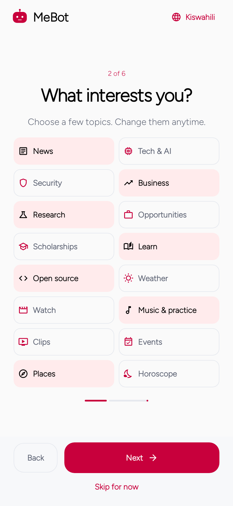
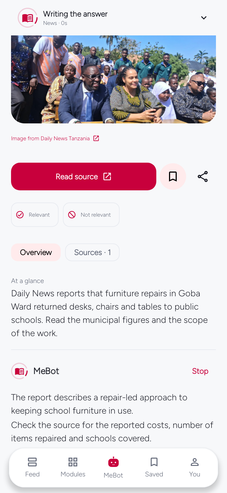
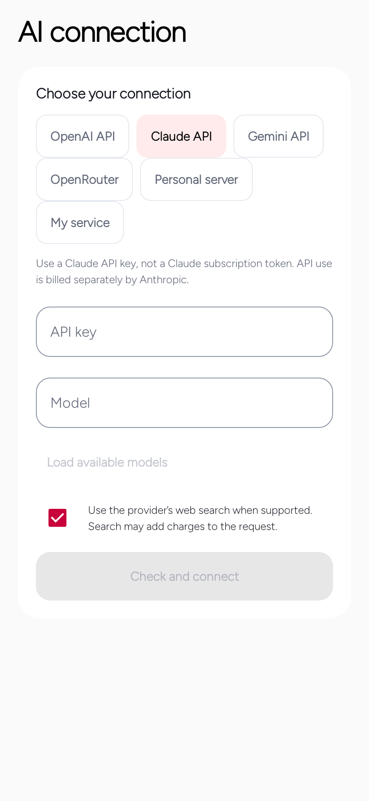
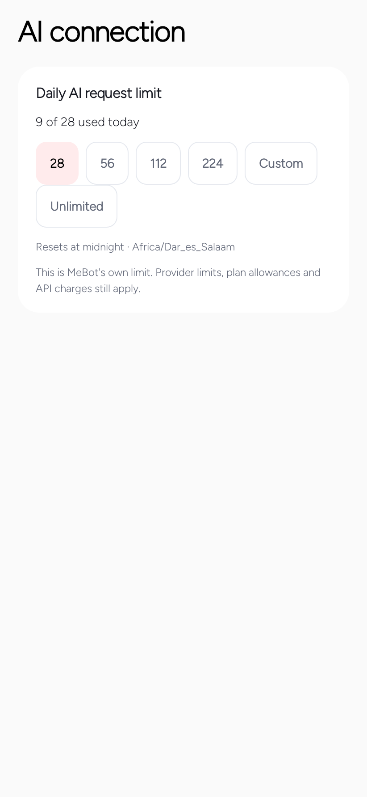
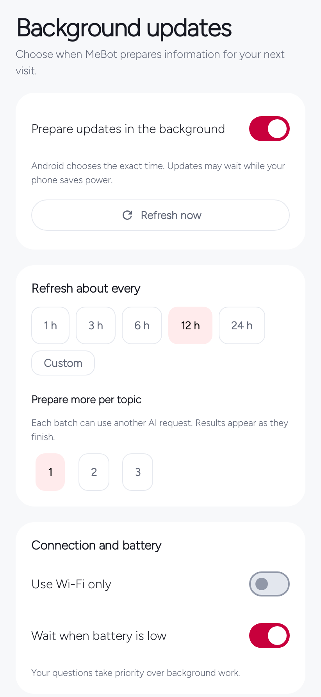
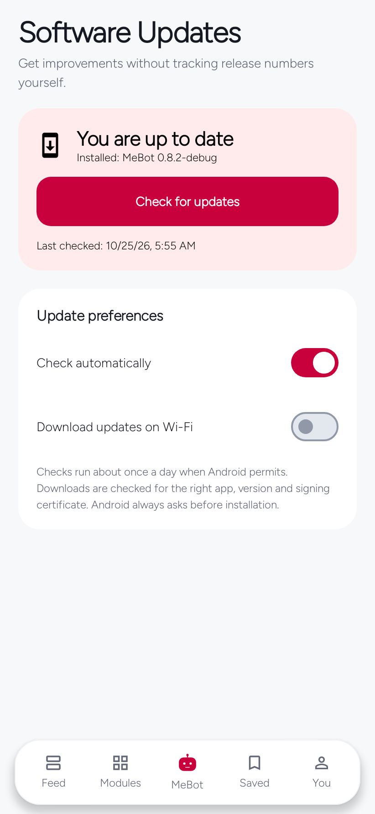
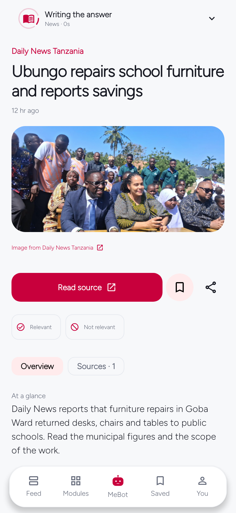
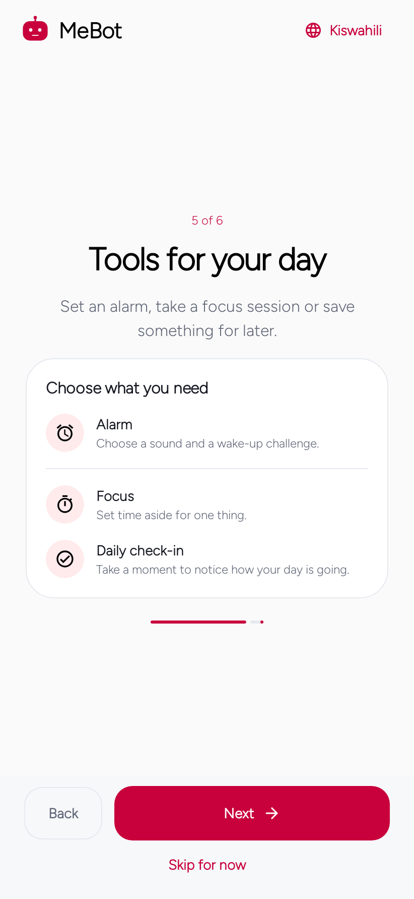
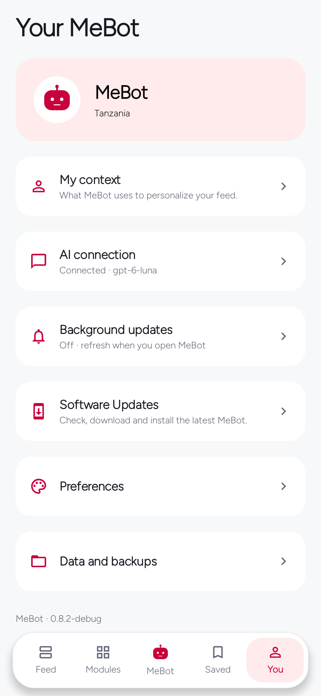

MeBot 0.8.2 · Android
Make MeBot work for you
The important controls, with current native app screens.
Start with your interests
Onboarding lets you choose topics and an optional city. A context JSON file is not required. Later, Copy starter prompt works with any suitable assistant; import or paste the JSON, review it and apply. Notices are compact, dismissible and only shown when useful.


Tell MeBot what is useful
Relevant and Not relevant are module-specific recommendation signals, not social likes. Change your vote or Undo it. Repeated votes do not compound. Signals decay and remain bounded. Reading-history deletion does not erase recommendation feedback.


Choose a provider, then a model
ChatGPT sign-in is subject to provider eligibility. Claude uses Anthropic API keys, not Claude.ai subscription credentials. OpenRouter uses its own authorization and credits. Gemini uses supplied public source material, not Google Search grounding. A compatible personal server is explicit; a saved API key is never sent over HTTP. The optional personal service remains OpenAI-backed.


One request allowance
Set presets, Custom or Unlimited in AI connection. Changing the limit does not reset the consumed counter. This is MeBot’s attempted-request allowance, not a provider token allowance or spending guarantee. No silent paid fallback occurs.


Useful results before everything finishes
Each completed module can publish immediately. Cached reading survives partial failures. At the top, the edition can update in place; while reading, Show new items lets you accept additions. Configure refresh, preparation, Wi-Fi/battery conditions and quiet hours in cards.


Software Updates
Automatic checks find compatible official releases. Optional Wi-Fi preparation downloads the candidate. MeBot verifies package, newer version, Android compatibility, size, checksum and certificate before opening the installer. Android still asks for approval. This release’s new package does not overwrite the old app.mynguli package.


A stable introduction and one activity area
The introduction stays visible during preparation and streaming. The answer surface has no rounded clipping. Tap the fixed top activity panel for a popover matching its width. Events describe actual work; provider summaries appear only when supplied. Media or file checks do not block the answer.


Alarm, Focus and Daily Check-in
All three optional tools are introduced together. They remain independent of AI. Configure the alarm sound and permissions and test on your phone before relying on overnight delivery. Focus and Check-in are optional, not prerequisites to reading.


Know what Clear History means
Clearing reading history is a separate confirmed action. Saved items, conversations, preferences and relevance feedback are retained. The guide is short, skippable and replayable from Help.


Evidence and limits
Physical-device installation, paid inference, media-provider playback and overnight alarms still require phone checks.